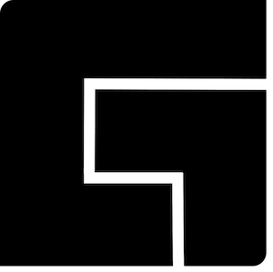

This is very much still just a test...
- Sort by name
- Sort by category
- Show all
- Only show reconstruction packages
- Only show simulation packages
-

Berkeley Advanced Reconstruction Toolbox (BART) Reconstruction
Reconstruction toolbox and programming library for parallel imaging and compressed sensing available for Linux, Mac OS X, and Windows.
Principal developers: Martin Uecker, Jon Tamir and Frank Ong
-

Gadgetron Reconstruction
General-purpose, open source, medical imaging reconstruction framework.
Principal developers: Michael Hansen, Thomas Sørensen
-

gpuNUFFT Reconstruction
C++ CUDA accelerated non-uniform FFT for arbitrary 2D/3D data with direct Matlab interface on Windows and Linux
Principal developers: Andreas Schwarzl, Florian Knoll
-

ISMRMRD Data format
Vendor-neutral MRI raw data format based on standard developed by a subcommittee of the ISMRM Sedona 2013 workshop
Principal developers: See full list of developers
-

Low field simulator Simulation
This package is a MATLAB based tool for simulating low-field MRI acquisitions based on high-field acquisition, enables prediction of the minimum field strength requirements for a broad range of MRI techniques.
Principal developers: Weiyi Chen, Ziyue Wu, Krishna S. Nayak